JSTwi操作説明(まだ作成途中です)
インストールする
1.jstwi.ZIPを適当なフォルダにコピーして展開する。
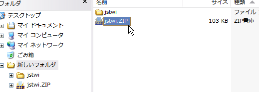
JSTwiを起動する
1.jstwiフォルダにあるindex.htmlをブラウザで開く。 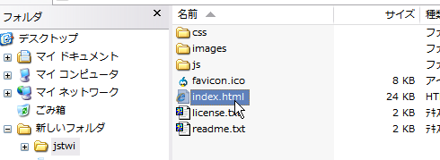
アンインストールする
1.jstwiフォルダをサブフォルダも含めて削除する。 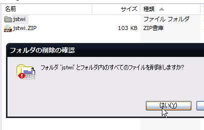
ユーザを登録する
1.ユーザ選択画面で【新規登録】ボタンを押す。
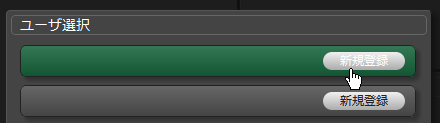
2.【Sign in with Twitter】ボタンを押して、Twitter公式サイトを開く。
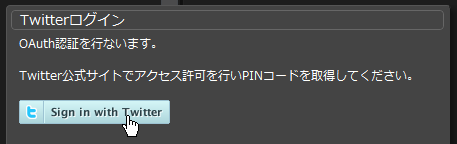
3.アクセス許可画面が表示されるので、注意書きをよく読んで問題なければ【許可する】ボタンを押す。
※Twitter公式サイトにログインしていない状態の場合はIDとパスワードの入力画面が出ます。
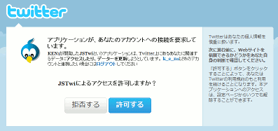
4.PINコード(7桁の数字)が発行されるので、数字をクリップボードにコピーする。
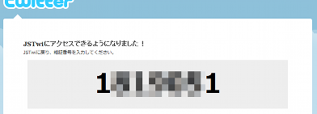
5.JSTwiに戻って入力エリアにPINコードをペーストし、【開始】ボタンを押す。
※登録した情報(ユーザID、スクリーン名、アクセストークン)はcookie（またはlocalStorage)に保存します。
Chromeでローカルファイルから実行した場合はcookieが使用できないためlocalStorageを使用しています。
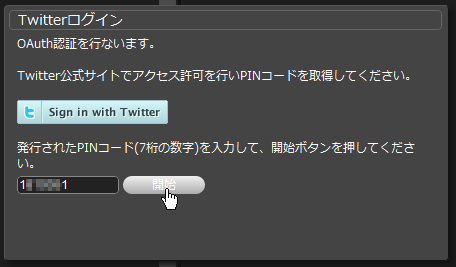
ログインする
1.ユーザ選択画面でログインしたいユーザの【ログイン】ボタンを押す。
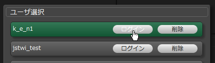
2.ログイン後にユーザを切り替える場合は、画面右端のメニューから[ユーザ切り替え]ボタンを押す。
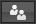
ユーザを削除する
1.ユーザ選択画面で削除したいユーザの【削除】ボタンを押す。
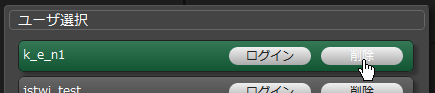
2.削除確認画面が表示されるので、問題なければ【OK】ボタンを押す。
OAuth認証なしでログインする
1.ユーザ選択画面でゲストモード(認証)なしの【ログイン】ボタンを押す。
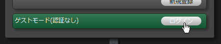
2.ゲストユーザとしてログインし、一部の機能を認証なしで使用可能となる。
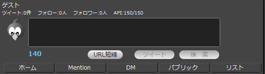
ゲストモードで使用できる機能一覧
- パブリックタイムライン表示
- 指定ユーザのタイムライン表示
- 検索
設定する
1.画面右端のメニューから[設定]ボタンを押す。
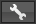
2.設定画面で以下の設定を行う。
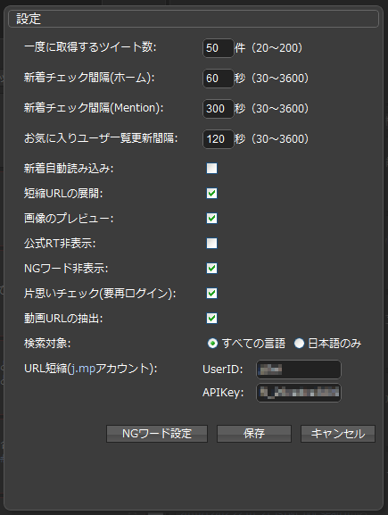
- 一度に取得するツイート数 (初期値:20件) 1回の要求で取得するタイムラインや検索結果等の件数を20～200件の範囲内で設定する。
- 新着チェック間隔(ホーム) (初期値:60秒) ホームの新着チェックを行う間隔を30～3600秒の範囲内で設定する。
- 新着チェック間隔(Mention) (初期値:300秒) Mentionの新着チェックを行う間隔を30～3600秒の範囲内で設定する。
- お気に入りユーザ一覧更新間隔 (初期値:60秒) お気に入りユーザ一覧の更新を行う間隔を30～3600秒の範囲内で設定する。
- 新着自動読み込み (初期値:しない) しない(チェックなし)：「新着xx件あり」を表示する。「新着xx件あり」がクリックされたら新着ツイートをタイムライン上に出力する。
- 新着ツイートにスクロール (初期値:しない) しない(チェックなし)：新着を読み込んだとき、先頭にスクロールしない。
- 短縮URLの展開 (初期値:しない) しない(チェックなし)：短縮URLにカーソルを乗せても何も表示しない。
- 画像のプレビュー (初期値:しない) しない(チェックなし)：画像、動画投稿サイトのURLにカーソルを乗せても何も表示しない。
- 公式RT非表示 (初期値:しない) しない(チェックなし)：ホームタイムラインに公式ツイートを表示する。
- NGワード非表示 (初期値:しない) しない(チェックなし)：全てのツイートを表示する。
- 片思いチェック(要塞ログイン) (初期値:しない) しない(チェックなし)：片思いチェックをしない。
- 動画URLの抽出 (初期値:しない) しない(チェックなし)：ツイートに含まれる動画へのリンクを抽出する処理をしない。
- 検索対象 (初期値:すべての言語) 検索対象とする言語を選択する。
- URL短縮(j.mpアカウント) (初期値:なし) j.mpのLoginIDとAPIKeyを設定すると、URL短縮が使用できるようになる。
- [NGワード設定] NGワード設定画面を開く。
- [保存] 設定した値をcookie（またはlocalStorage)に保存し、設定画面を閉じる。
- [キャンセル] 設定した値を保存せずに設定画面を閉じる。
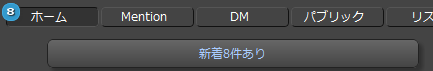 する（チェックあり）：「新着xx件あり」を表示しない。新着を取得したらすぐにタイムライン上に出力する。
する（チェックあり）：新着を読み込んだとき、先頭にスクロールする。
※新着自動読み込みが「する」になっている場合のみ有効。
する（チェックあり）：短縮URLにカーソルを乗せたとき、短縮前のURLをポップアップで表示する。
※短縮URLの展開にはhttp://www.jstwi.comで提供する短縮URL展開APIを使用しています。
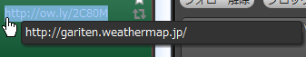
する（チェックあり）：画像、動画投稿サイトのURLにカーソルを乗せたとき、サムネイル画像をポップアップで表示する。
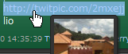
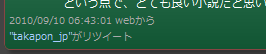 する（チェックあり）：ホームタイムラインに公式ツイートを表示しない。
する（チェックあり）：NGワード設定で指定した文字列が含まれるツイートを表示しない。
する（チェックあり）：自分のフォロワー以外のツイートを赤色の線で囲む。
フォロワー 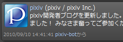 フォロワー以外 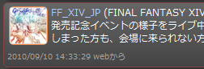
する（チェックあり）：ツイートに含まれる動画へのリンクを抽出する処理を行う。
抽出された動画の数だけ下のアイコンが表示される。
アイコンクリックで動画を再生する。
アカウント設定なし 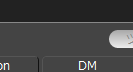 アカウント設定あり 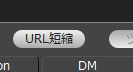
※Chromeでローカルファイルから実行した場合はcookieが使用できないためlocalStorageを使用しています。
NGワードを登録する
1.設定画面で[NGワード設定]ボタンを押す。
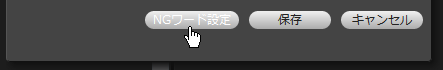
2.NGワード設定画面で登録したいNGワードを入力し、[追加]ボタンを押す。
※NGワードには正規表現が使用できます。
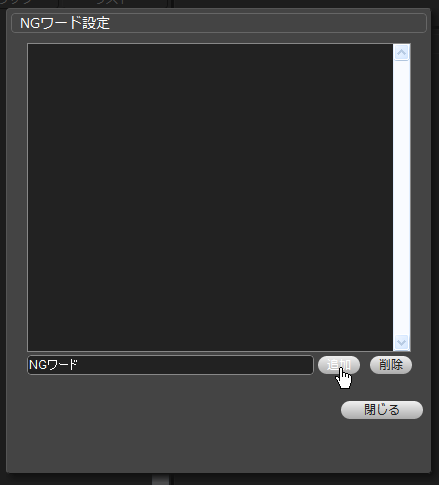
3.リストに追加される。
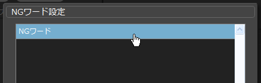
NGワードを削除する
1.削除したいNGワードを選択し、[削除]ボタンを押す
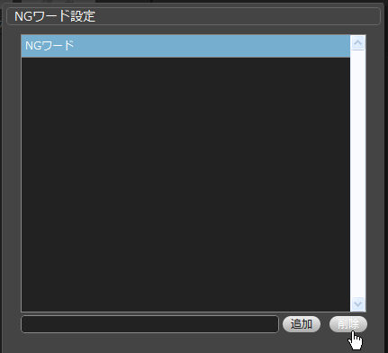
2.リストから削除される。
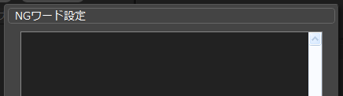
更新チェックする
1.画面右端のメニューから[更新チェック]ボタンを押す。
2.確認画面で[OK]ボタンを押すと、http://www.jstwi.comに更新チェックの要求を行う。
 3.使用してるJSTwiが最新の場合は、以下のメッセージが出力される。
3.使用してるJSTwiが最新の場合は、以下のメッセージが出力される。
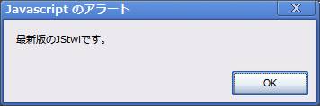
4.使用してるJSTwiが最新でない場合は、以下のメッセージが出力される。
[OK]ボタンを押すと、http://www.jstwi.comからjstwi.ZIPをダウンロードする。
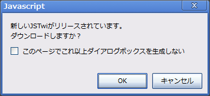
タイムラインの見方
1.各部説明 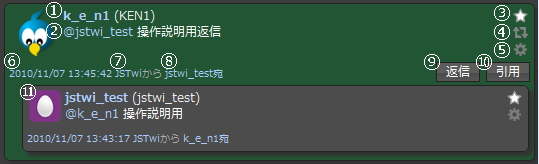
- 1.スクリーン名（名前） スクリーン名をクリックすると画面右側にユーザのプロフィールとタイムラインが表示される。
- 2.ツイート @スクリーン名をクリックすると画面右側にユーザのプロフィールとタイムラインが表示される。
- 3.お気に入り このツイートをお気に入りに登録する/登録解除する。
- 4.リツイート このツイートをリツイートする。
- 5.オプション オプションメニューを開く。
- 6.投稿日時 クリックすると公式サイト(http://twitter.com/スクリーン名/status/ステータスID)に飛ぶ。
- 7.クライアント名 クリックするとそのクライアントに設定されたURL(クライアントの配布サイト等)に飛ぶ。
- 8.返信元 in_reply_toが設定されている(返信ツイート)場合のみ表示される。
- 9.返信ボタン ツイート入力エリアに「@スクリーン名 」を入力し、in_reply_toを設定する。
- 10.引用ボタン ツイート入力エリアに「 RT @スクリーン名 ツイート」を入力する。(非公式RT)
- 11.返信元ツイート 8.返信元をクリックすると表示される。
URLをクリックするとリンク先に飛ぶ。
#ハッシュタグをクリックすると画面右側にハッシュタグの検索結果が表示される。
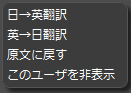
クリックすると返信元のツイートをインライン表示する。
Ctrlキーを押したまま返信ボタンを押した場合は「@スクリーン名 」を追加入力し、in_reply_toは設定しない。
返信元の返信元…と遡って表示することもできる。
Tips
書いておかないと気付かなそうな機能
- フォロー:xxx人/フォロワー:xxx人をクリックすると右上にフォロー/フォロワーを100人ずつ表示
- フォロー/フォロワー一覧のアイコン+文字表示形式では項目名クリックでソートできる
- Shift+Enter、Ctrl+Enterでツイート([ツイート]ボタンを押したときと同じ)
- ホーム、Mentionタブの左上にでる新着件数をクリックすると新着をTLに展開(「新着xx件あり」をクリックしたときと同じ)
- ユーザタブでユーザ名を入力して[表示]ボタンを押すと、指定したユーザのプロフィール＋ツイート表示
- ユーザのプロフィールでアイコンをクリックすると、表示しきれないプロフィールを全部表示
- ユーザタブでテキストボックスをクリックするとユーザ表示履歴をプルダウンで表示(履歴は再起動でリセット)
- 検索タブでテキストボックスをクリックすると検索履歴をプルダウンで表示(履歴は再起動でリセット)
- プロフィールでお気に入り:xxx件をクリックすると、そのユーザのお気に入り一覧を表示
- 自分が公式RTしたツイートを見たりRTを取り消したいときは、自分のプロフィールを開いて[リツイート]ボタンをクリック
- ブロックしたユーザを見たりブロック解除をしたいときは、自分のプロフィールを開いて[ブロック]ボタンをクリック
- 保存した検索条件を見たり破棄したいときは、自分のプロフィールを開いて[保存した検索]ボタンをクリック